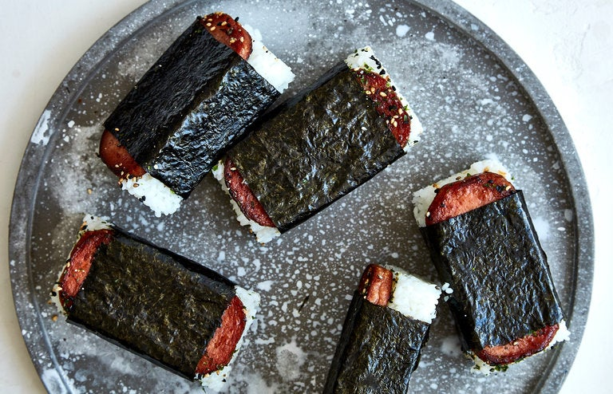

Spam Musubi

Description
Spam, the love-it-or-hate-it canned ham, was introduced in 1937 and gained popularity during World War II, when more than 150 million pounds were shipped to American troops overseas. Soldiers introduced it to locals, who used the product to create spin-offs of regional dishes like Japanese onigiri and Korean budae jjigae. According to Hormel Foods Corporation, residents of Hawaii eat more Spam than those of any other state. A popular way to eat it there is in the tradition of Japanese omusubi: Stack a pan-fried slice of Spam and a rice patty and wrap a piece of roasted nori around it. This version of the dish is adapted from “Aloha Kitchen: Recipes From Hawai‘i,” a cookbook of classic Hawaiian dishes by Alana Kysar.
Ingredients
- 2 tablespoons soy sauce
- 2 tablespoons light brown sugar
- 1/2 teaspoon mirin
- 1 to 2 teaspoons neutral oil, like canola
- 1 can Spam, cut horizomtally 8 slices
- 3 sheets roasted sushi nori, cut into thirds crosswise
- 2 teaspoons furikake
- 5 to 6 cups cooks short grain white rice
Steps
- In a small bowl, whisk the soy sauce, sugar and mirin (if using). Set aside.
- Lightly coat the bottom of a large skillet with oil and heat over medium. Fry the Spam slices until evenly browned and crispy, 2 to 3 minutes on each side. Turn off the heat. Working quickly to avoid burning, add the soy mixture and turn the Spam slices until evenly coated in glaze. Immediately transfer the Spam slices and glaze to a plate.
- To mold the musubi, start by placing a strip of nori, rough side up, on a cutting board or clean work surface. Place a Spam musubi maker mold over it, in the middle, then place a slice of Spam into the mold. (If you don’t have a mold, you can line a clean Spam can with plastic wrap instead, and place a slice of Spam at the bottom.) Sprinkle ¼ teaspoon furikake over the Spam, then fill the mold or can with a generous mound of rice. Press the rice firmly with the musubi maker press or with your hands until it is ¾- to 1-inch thick, adding more rice as needed.
- Use the press to hold the rice down with one hand and pull the mold upward to unmold the musubi with your other hand. (If you’re using the Spam can, gently lift the Spam and rice out of the can by gently pulling on both sides of the plastic wrap.) Wrap the nori around the Spam-rice stack, bringing both ends of the strip to the middle, folding one over the other, and flipping it over so the seam is down and the Spam is facing up. Repeat with remaining ingredients. Serve immediately or wrap with plastic wrap to take with you on the go.